“If you awake to a knife at your throat, if monsters dig their claws into you, if death comes knocking at your door, call out my name. Adeptus Xiao. I will be here when you call.”
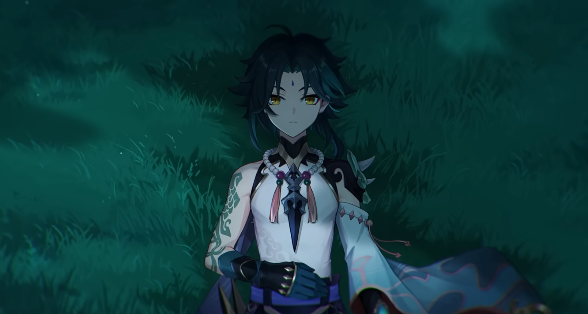
I’m far from human. I can’t make much of human emotions
Xiao - Vigilant Yaksha
Credits
- Written by: Blanky
- Reviewed by: Arun
- Proofread by: Lare
- Last updated on: 1st April 2023
- Character story updated till v3.5
- Story and Quest involvements - Work-in-Progress
Xiao
- Title - Vigilant Yaksha
- Type - Limited 5-star, Medium Male, Anemo Polearm playable character
- Birthday - April 17th
- Constellation - Alatus Nemeseos
- Affiliation - The Yaksha, Liyue Adeptus
- Special Dish - Sweet Dream
- EN VA - Stephanie Southerland
- CN VA - Kinsen
- JP VA - Matsuoka Yoshitsugu (松岡 禎丞)
- KR VA - Sim Kyu-hyuk (심규혁)

Xiao is the last remaining foremost Yaksha who fought in the Archon War and holds the highest level of seniority among Adepti. Saved by Morax from his shackles, he devoted his life to both Rex Lapris and the land of Liyue that he fought for. Faced with guilt and his karmic debt, Xiao leads a life of constant battle with demons and himself, trying to find a way to move on.
He holds an Anemo Vision from Liyue and wields a polearm.
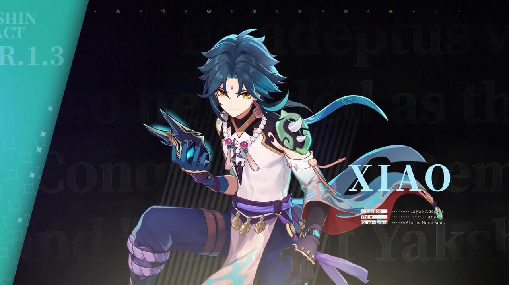
Etymology
“Xiao” is a gender-neutral name of Chinese origin which is comprised of two separate characters (in Chinese), 鬼 (gui, ghost) and 肖 (xiao). 肖 is another homophone and in this case has connotations to ‘slight, small’ or ‘disappear, perish, exterminate’. Together it is 魈 that means “Mountain Demon”
Yakshas are spirits that frequently hurt or eat people in Buddhism. The king of the heavens and the gatekeepers who protect the entrances to this world are in charge of the yakshas that live there.
Constellation: Alatus Nemeseos

Meaning: Winged Nemesis (Latin)
The Constellation represents a bird which can symbolise Xiao’s avian beast form which he takes on the form of “Garuda”, a Hindu demigod, or “Peng”, a giant bird.
Several Buddhist sects have a well-known group of guardian yakshas known as the Twelve Heavenly Generals. With the exception of Mekhila, who would otherwise correspond to the rooster, all but one of them are related to different animals in the Chinese zodiac. Mekhila is instead linked to the golden-winged Garuda, a deity from numerous Indian faiths. According to legend, this golden-winged bird deity was a terrifying predator who exclusively ate wicked dragons. One day, however, the poison from the dragons he had eaten proved to be too much for him to handle, and he burnt to death, leaving only a crystal heart behind. Aspects of Xiao’s character appeared to fit this story.
This has a significant meaning with Xiao as Yakshas are Illuminated Beasts who signed a contract with Morax to defend Liyue from the fallen gods’ hatred that causes plagues and curses. Linking Xiao to a bird also shows his character’s core of being a “swift and nimble spirit”, being quick with his attacks as seen in both his normal attacks and skill.
The bird could represent Xiao’s courage and strength to be chosen among the foremost Yaksha chosen by Morax to defend his very land, even at the cost of their life. It shows loyalty and respect for the very person who saved him from his suffering, which also can mean his freedom from his torturous past and hope for a new beginning, in both past and the present.
Imprisonment Of Dreams
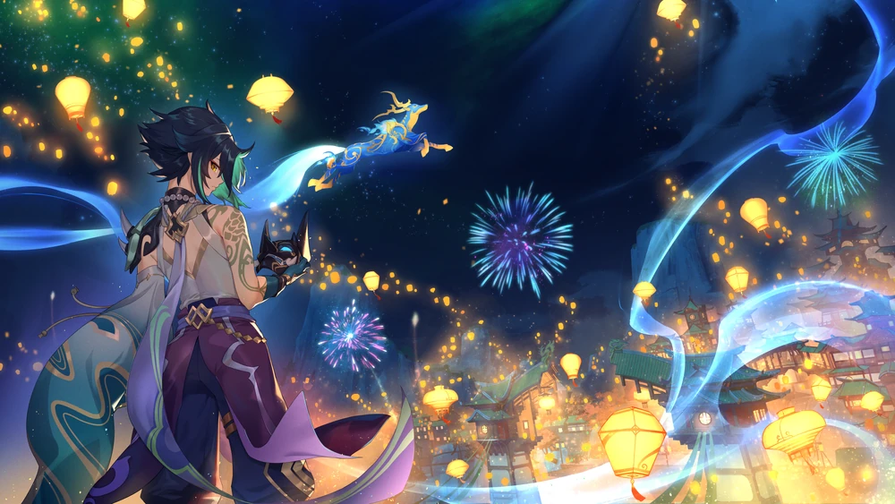
“I deal in death. If you cannot bring yourself to kill - speak my name”
2000 years ago, Xiao was born as an illuminated beast, a creature with superior power and abilities than mortals. He was born in the midst of the raging Archon War as Gods battled for one of the seven seats for the title of Archon. An evil God discovered the young beast, making use of his weakness; his true name, enslaving him and forcing him to perform cruel acts. This included devouring the dreams of his victims. Due to this, Xiao carries a strong amount of guilt to the point he places little to no value on his own life.
Meeting Morax was the turning point in his life, as the two ran afoul with Morax, who defeated the evil God. He liberated Alatus, bestowing him with three gifts:
- The name “Xiao” for his own protection.
- Freedom, to choose his own actions and directions in life.
- A found family in the form of other Yakshas.
Morax’s act of kindness develops loyalty and respect in Xiao to serve him to repay his debt. Since then, Xiao participated in the Archon War under the command of Rex Lapis, slaying any adversaries that oppose Morax’s fight for peace. Due to this, other Adepti refer to him as “Conqueror of Demons” out of respect as he holds a high level of seniority among them.
The Yaksha; Contract of Karma
When the deceased bodies of Gods and monsters began to release curses and miasmas, Morax summoned the Yakshas to aid him in suppressing these manifestations. Xiao was among those who responded, as well as the other four foremost Yakshas; Bonanus, Bosacius, Indarias and Menogias. They swore an oath;
“Restore order through slaughter. Purge evil through battle, to this we dedicate our lives”
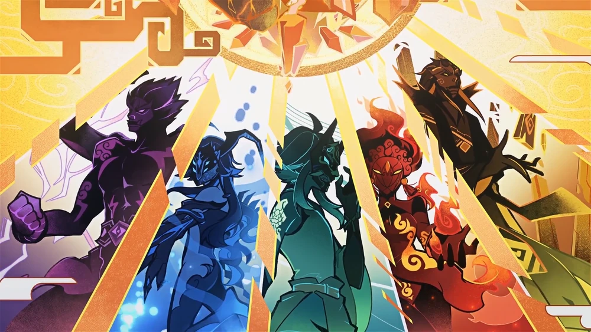
The five strongest Yakshas, along with junior Yaskas, fought the demons that spawned throughout Liyue, carrying out their duties for some thousand years, even after the Archon War ended.
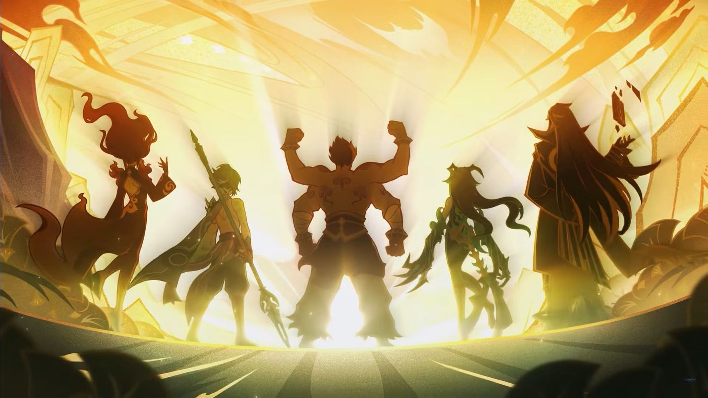
However, over the years, not only did they have to fight against the lingering power of the evil Gods, they had to suppress their own karmic debt to not taint their souls which incurred physical and psychological pain. When karmic debt weighs upon them, phantom wrath seeps into their broken souls. They go mad with fear, turn on each other, or disappear, erased from existence.
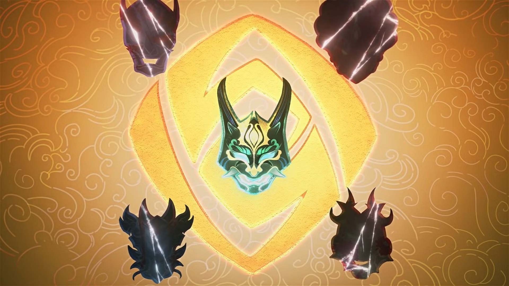
Most of the foremost Yakshas have died, leaving the eldest Yaksha, Bosacius and the youngest, Xiao. Bosacius eventually left to face his fate in the Chasm, which leaves Xiao as the last Guardian Yaksha. Xiao nearly succumbed to his own karmic debt.
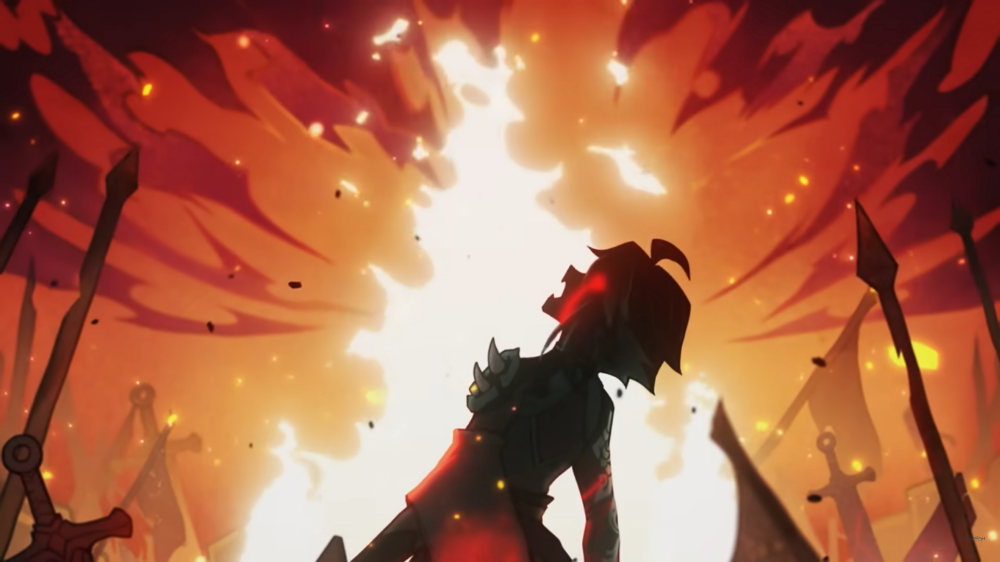
However, at his lowest point, he heard music under the glow of Guyun and in the sound of the Dihua flute which calmed his soul and cleansed his karmic debt.
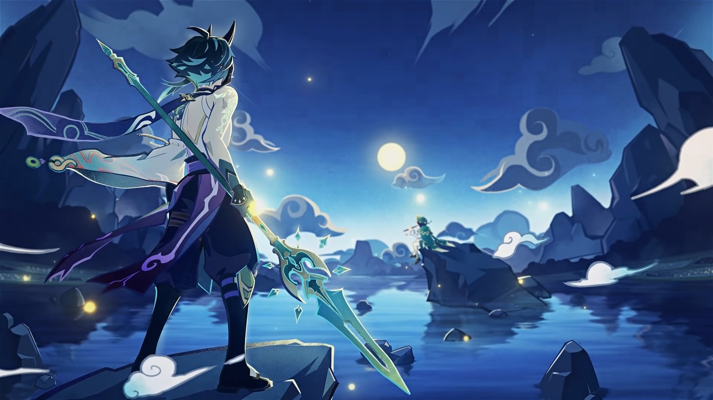
Aftermath: Moving On
Now in the era of peaceful Liyue, Xiao still continues his duties of protecting Liyue from evil malice as he receives unique painkillers from Morax, now known as Zhongli, to help with his karmic debt.
The loss of his allies over the course of the years and the violent deeds he performed has caused him to develop regrets and feel worthless to live when his comrades have died. This has caused Xiao to have an intimidating exterior and usually acts coldly towards others as a way to protect them from his karma-ridden constitution. He finds mortal affairs strange, childish or pointless. Deep down, Xiao has a gentle soul, curious about humanity, wanting to fit in with others, but is hesitant to show that side of him.
The Liyue Qixing built the Wangshuu Inn at Dihua Marsh, run by their agents Verr Goldet and Huai’an to give Xiao a place to rest. Xiao, although typically avoids humans, got along well with the two agents, entrusting them to cover for his unintended destructive tendencies.
Human souls are less robust than Adepti’s, and his karmic debt taints his surroundings. Hence, only a few people in Liyue know much about him. Those who do know, as well as other Adepti, show their utmost respect for the Guardian Yaksha who protects the land in the shadows.
With Liyue’s citizens beginning to self-govern without the needs of their Archon and other Adepti leaving their presence for the mountains, Xiao continues to defend Liyue and makes more attempts to understand a mortal way of life.
The Will to Live: Perilous Trail
Sometime after the traveler explores the Chasm and unravels the abyss scheme, Xiao seeks Zhongli’s permission to search the Chasm for Bosacius, as he believed he was last seen there.
When Xiao faced a manifestation of Bosacius’ will, his corrupted soul fought back, as Xiao struggled to make peace with it.
As Xiao regrouped with the traveler and the others, he explains how the domain is an antlion’s den, using illusions to slowly entrap their victims
Xiao proposed to use his power to get the group back to the surface at the cost of his being left behind.
The group confronted the remnant of Bosacius’ memory, confirming Xiao’s suspicions that Bosacius was the nameless Yaksha that participated in the battle of the Chasm. He purges the memory, as he and Yelan begin to power the Fantastic Compass to return to the surface. As the group battle against the malevolent energy, Xiao’s power suddenly starts to give in, and upon quick consideration, he uses the last of his energy to hurl the group to the surface. As the platform shatters, Xiao begins to fall back down, accepting his demise. However, a swirl of yellow energy, manifested by Zhongli, rescued Xiao.
Xiao invites the Traveler to Pervases’ temple, telling the traveler that not knowing Bosacius’ fate had always bothered him, as he reflects on his suicidal thoughts and past actions, agreeing with the traveler that those who died defending Liyue are heroes of history.
The entire event of Perilous Trail was a reality check for Xiao, that his life had meaning, and worth, and that he shouldn’t have the mindset of survivor guilt. His life had real value, to the traveler, Morax, his deceased Yakshas, and the people of Liyue, who are grateful for his self-sacrifice for the nation. That is the lesson Xiao has yet to learn to truly be the Guardian Yaksha.
Even Morax wants Xiao to fight for his right to live. He is not a weapon that can simply be discarded that is completely at odds with how Xiao views himself. This event will be a significant moment in Xiao’s life, as when he looks back, maybe he will finally understand that being alive means carrying the will of others even though they have left this life and that he is worth something in the eyes of others.
Aspirations
“The damned will sooner die again than lay a hand on me.”
Xiao aspires to carry the weight of being Liyue’s Guardian Yaksha, protecting its citizens from the never-ending malicious intent left by the deceased evil Gods, to repay his debt to Morax giving him a path of redemption from his violent deeds when he was enslaved by the evil God. While he protects Liyue, he too hopes that one day he can fit in with human society, connecting to mortals and not needing to avoid them because of his past.
Vision
“Visions? Desire? Ha. Do not judge adepti by your mortal ideals. I have no desire.”
If humans can be granted a vision by their strongest desires and ambitions, how do the mighty and illuminated Adepti receive their vision?
Xiao doesn’t remember the moment he received his vision, unlike humans who refer to it as an unforgettable event. For Xiao, it was just the beginning of his endless battle.
Many human festivals are hosted in Liyue, where man-eating monsters were defeated by the Adepti host. People copy their deeds, staging exorcism rituals to remember their heroism with these practices evolving into celebratory festivals.
The hatred and malice of many Gods defeated by Rex Lapis sometimes erupt with absurd force, and among them, the eruption that takes place during the Lantern Rite is the worst of them all.
Xiao carries out his mission to perform the time-honored “Nuo Dance of Evil Conquering” fighting nights and days throughout the Lantern Rite period. As such, he comes to hate it.
Now, Xiao does not consider these battles dangerous; due to his hard work, Liyue is still peaceful.
As people light their lanterns, blessed with their wishes and desires, Xiao watches in the shadows. Special, unrecognized feelings start to blossom in Xiao’s heart. Was it loneliness that got the best of him? Or the seemingly suspicious peace that he now has? Was it his fate that is to come as years continue to pass, as he continues his battle with demons? He tries his best to search for an answer in his heart, but to no avail. Maybe, only time will tell.
His Connections
Yakshas
Xiao, like the other Yakshas, considers them family, calling each other brother or sister. While Xiao is the youngest among them, he seems happy in his newfound family as together under the commands of Morax, they protect the land that they truly loved.
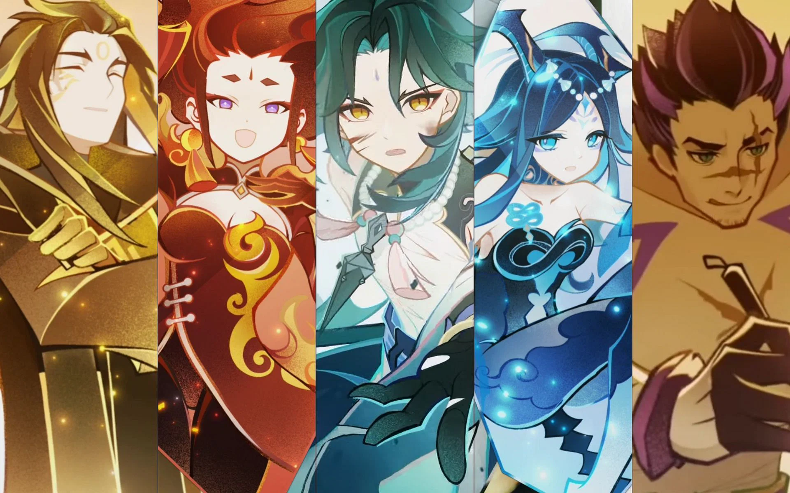
From left to right: Menogias, Indarias, Alatus, Bonanus, Menogias
Bosacius
The Electro Yaksha, Marshal Vritas, was the oldest, and obviously their leader for his strength and seniority.
Alatus claimed that Bosacius was a proud man since he always revealed his identity before engaging in combat. Alatus also saw him as a capable commander in addition to a formidable combatant. These characteristics lasted even while Bosacius was insane: despite being unable to recall his duty or his cherished companions, he nonetheless made the decision to give his life in order to protect Liyue.
Outside of battle, Bosacius appeared to be a kind and humorous person who was adored by his fellow yakshas. He could only think of his fellow Five Yakshas in his final hours, referring to them as his “brothers and sisters,” and remembering their times spent together. One of these memories involved him sketching while Alatus was sleeping.
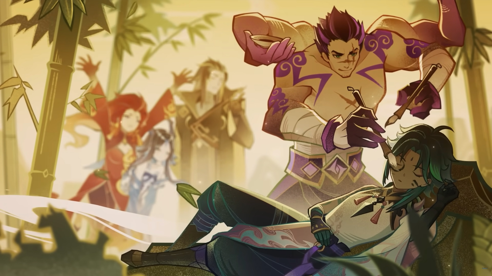
Indarias
The Pyro Yaksha, General Musatas, appeared to be close with Bonanus, appearing next to each other in Bosacius’ memories.
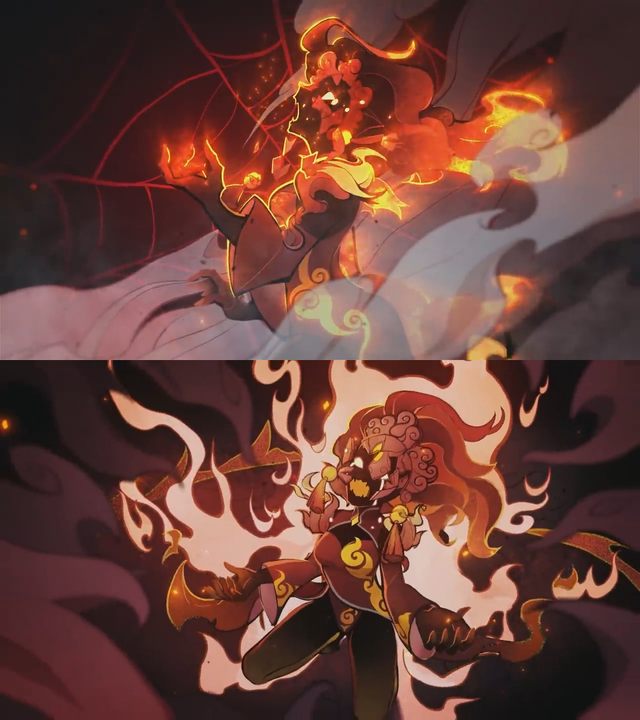
Little is known about her, but Indarias succumbed to the karmic debt accrued from endless slaughter, going mad with fear and eventually perishing.
Bonanus
The Hydro Yaksha, General Chizapus, like Indarias, has little to no information of her life before her death.
Menogias
The Geo Yaksha, General Kapisas, had a hobby of designing intricately beautiful clothes.
Rex Lapis was fond of Kapisas’ designs and bought a lot of his creations for his personal wardrobe, including the outfit he’s wearing right now in his human form.
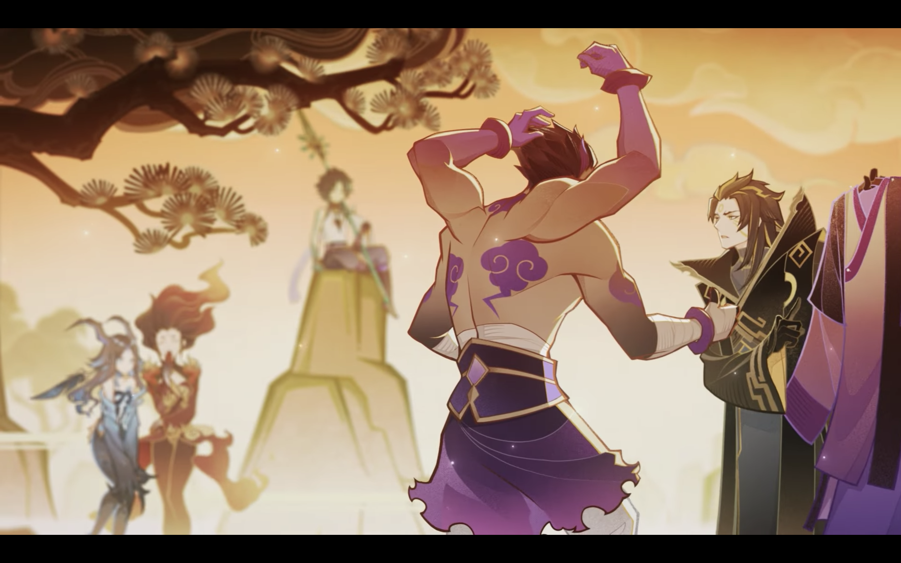
Yet Bosacius was the complete opposite. During "Only Old Memories Stay" , Menogias tries to persuade Bosacius to don a purple robe in one of Bosacius’ memories. The four-armed yaksha was puzzled by the robe’s lack of four arms, though.
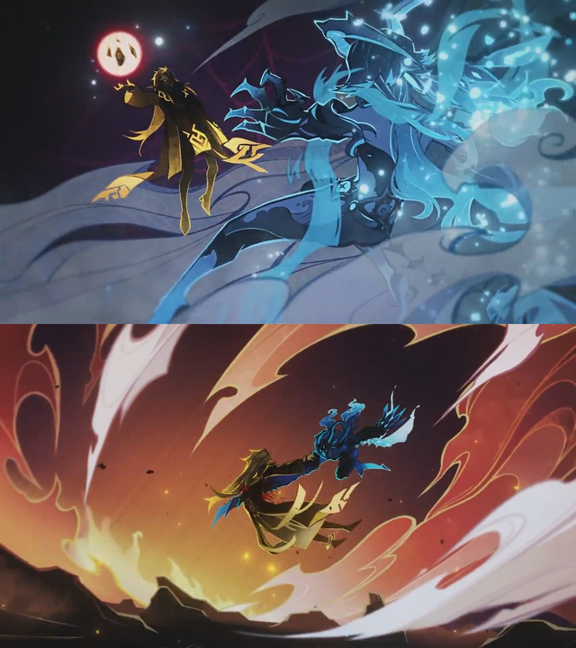
Menogias eventually died as a result of the karmic debt he incurred from ceaseless bloodshed. It is implied that he and Bonanus murdered one another in combat.
When the Yakshas died out, Xiao was the only one left. He seeks permission from Zhongli to head for the Chasm in search of the nameless Yaksha, later revealed as Bosacious. Learning the truth of what happened to Bosacious gave Xiao a better understanding of their sacrifice to Liyue and consider them heroes of history.
Traveler
The traveler is a special person for Xiao as, in their presence, Xiao is more willing to indulge his curiosity about humanity, even if their ways perplex him. He offers to visit Liyue Harbor with them for the purpose of bonding and learning the ways of mortals, something Xiao had always been fascinated about.
Although he is stern and cold to others, he lightened up his tone when talking with the traveler, showing his comfortability with the traveler.
In the Liyue Archon Quest, Xiao saved the traveler’s life as they fell down from the shattered platform during the battle against Osial.
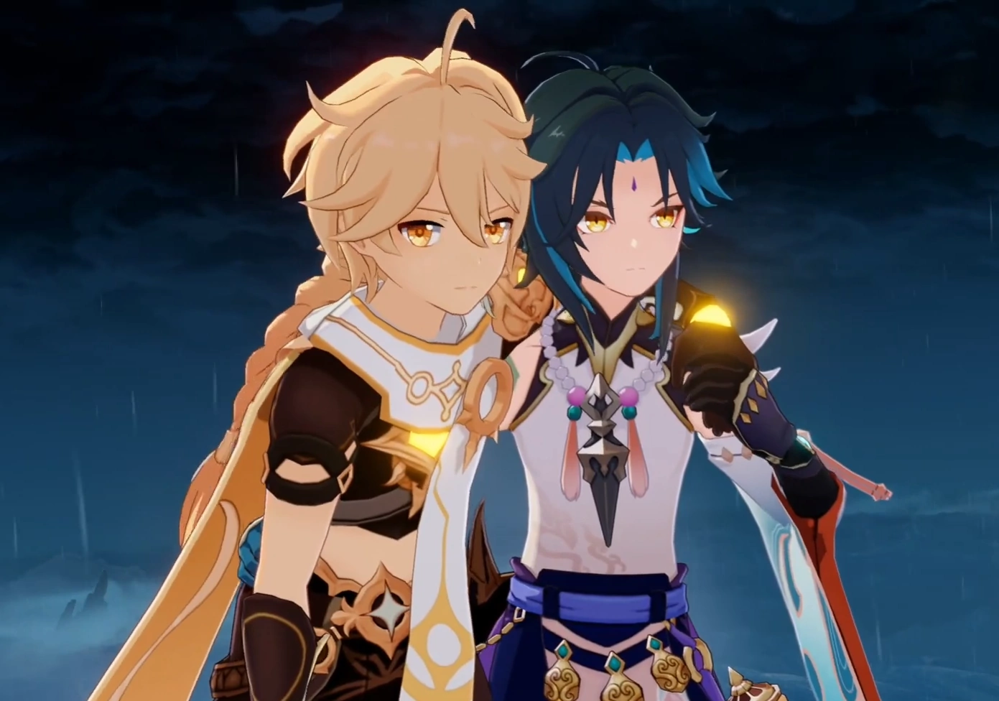
As having a strong relationship with the traveler, Xiao told them that if they ever need help, just speak his name and he will come in seconds.
Zhongli
Xiao has incredible respect and loyalty towards Zhongli, for obvious reasons. As the one who gave Xiao a second chance in life, Zhongli takes great responsibility to guide Xiao in finding his self-worth and the will to live than to grieve over his shortcoming of not being able to do anything for his fallen Yaksha. Maybe it’s because of the Yaksha’s demise that Zhongli now burdens a heavier responsibility to protect Xiao, as seen when he provides Xiao unique painkillers to cope with his karmic debt, as well as saving him in the Chasm.
All of this continues to build up Xiao’s respect towards Zhongli, dealing with those who oppose Zhongli.
"Morax…? What do you know of this name?! He gave me the name Xiao, and released me from the endless pain I endured. I will not forgive those that dare to speak against him, even you." -More About Xiao: IV
Venti
Venti was the one who saved Xiao from his karmic debt as he plays music on the Dihua Flute, calming Xiao’s corrupted soul. Although Xiao does not remember what happened, it seems that he knows Venti’s identity as the Anemo Archon.
"Venti? So that’s the name he goes by. His tunes are… forget it." - About Venti
As seen in the short trailer “Endless Suffering”, when Xiao teleported to Wangshu Inn, he was greeted by Venti, who was drinking rice wine.
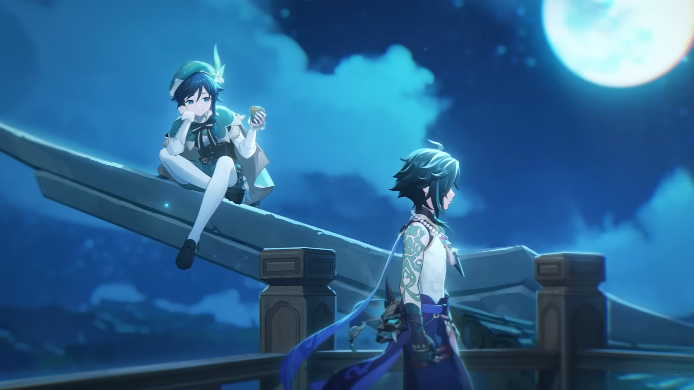
Although Venti invited Xiao to have a drink with him, Xiao rejected his request, informing him that he wanted to rest.
It seems that Venti knows Xiao, as he states when Xiao leaves;
"It’s good to take off the mask once in a while… even just for one night"
It really shows how Venti understands Xiao’s burden and self-sacrifices and is pleased to know that Xiao is taking it easy on himself, even if it is just for a while.
Ganyu
Ganyu shows respect towards him, participating in the Archon War alongside him and taking training under his wings.
Both have different views of each other. Xiao believed that he isn’t suited to be a mentor for Ganyu, as she tries to find a way to fit in with human society as the secretary to Liyue Qixing. He himself can’t even socialise with the common folks. Ganyu on the other hand feels like Xiao is an outsider which is made up by his personality. She also feels that she can’t get to know Xiao personally, nor does she want to try.
Quirks
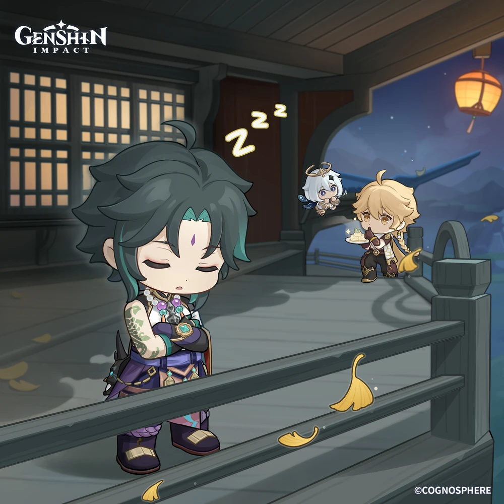
"Xiao - Birthday Chibi art."
Snow
As seen in one of his voicelines;
“Once the snow is thick enough, we can eat it”
This could imply that the evil god potentially starved him so savagely that he ate thick snow sometimes to satiate his hunger.
Cold Personality
Xiao has a tendency to get irritated with the traveler and others, but it isn’t their fault, but his. To protect others from being tainted by his karmic debt, he avoids or pushes people away for their well-being. His past of losing allies and violent deeds also adds to his hesitation of connecting with society. As such, he is alone most of the time.
Almond Tofu
Xiao’s favourite dish. The reason for liking it as its texture resembles that of the dreams he once consumed during his time enslaved by the evil God.
Its description states;
“His dream is very simple, and it is merely a lovely dream.”
Maybe eating Almond Tofu gives Xiao dreams that, instead of eating them by force from the commands of evil, he is eating them to have better dreams that he can love. Almond Tofu is also the Wangshu Inn signature dish, signifying its role as Xiao’s place to rest.
Wangshu Inn Bulletin Board
One of the messages on the Bulletin Board states:
Guest Message:
“I sometimes catch a glimpse of a youth standing on the top floor, but I’ve never seen this person before around the inn. Could it be my imagination?”
Reply:
“Our inn is situated in the Dihua Marsh, a region of mist and mysticism. What’s strange about seeing a good omen here? We thank guests for their understanding.”
This emphasises the fact that not many people know Xiao, questioning the mysterious Yaksha who looks young. However, those who know him; the agents running the Inn, explain that Xiao belongs to the Inn and the land of Liyue, expressing their gratitude and respect for the Yaksha and hope other people do too.
Brutality
In one version of “Guest from Afar”, Verr Goldet refers to Xiao as “the young gentleman” and requests that the traveler deals with the monsters in their area, as Xiao’s method of dealing with monsters tends not to consider the best interests of the surrounding area or the people in it. This can show Xiao’s brutal ways of dealing with monsters that usually end up destroying the lands and causing discomfort to onlookers or destroying nature. You can’t blame him; in a battle, having to take into consideration the surrounding is losing focus of the main threat. The enemies will not give you a second to rest, so attacking with full force is the best option.
Hobbies
When asked about his hobbies, Xiao praises us for our courage to ask him about it, before asking for a fight.
“Worthless!”
Lore Implications
In reference to Buddhism, he takes the form of the Golden Winged Great Peng. Hoyoverse has explained in an interview about designing Xiao that the decision to release Xiao at Lantern Rite was to tie in with the Chinese custom of driving away evil spirits at the new year, since Xiao’s role in Liyue is that of a protector in precisely this capacity, quoting;
During festivals, people offer up incense and pray to the Adepti for their protection.
But they do not pray to Xiao.
For Xiao is no lucky star that promises fame and fortune — he is a demon-hunting yaksha.
After the lantern lights of Liyue have faded, the thankless battle to protect the city goes on unseen. It is an endless battle, and there can be no victor.
It gives the first impression of Xiao that he is most likely to be of a silent and brooding individual, a courageous and competent fighter, and someone who harbors great suffering. This suffering comes from within Xiao himself. One aspect is that the years of intense, never-ending battle against the remnants of defeated Gods have led to him resigning himself to the fact that fighting is all he is good at. The other aspect is that the remnants have a negative effect on him, while the constant killing places a karmic burden on him, causing him mental and spiritual anguish.
Xiao having a youthful look can show that he is still learning the world and the meaning of living, carrying out the will of his older Yakshas, as well as looking up to Morax.
Speculative Theories
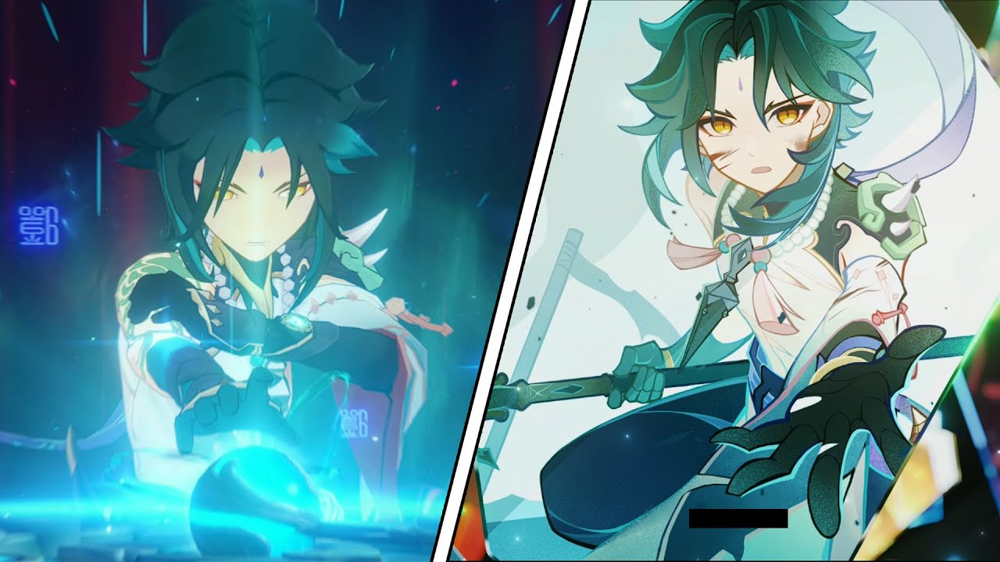
Don’t think about getting close, and stay out of my way, or all that awaits you is regret.
There has been speculation that Xiao is going to die in the future. It is supported by his suicidal way of thinking and self-sacrifice as seen in Perilous Trail. As such, he is a huge death flag. However, after recent events, Xiao is led to actually think for his well-being, as he is now finding the meaning to live his life out and to carry his fallen Yaksha’s legacy.
There has been another theory that Xiao will succumb to his karmic debt and go insane, causing Liyue Qixing and the other Adepti to take action. The Traveler would be there to witness everything unfold. It would be a tragic event to see Liyue’s last Yaksha finally fall like the others. How would the traveler, Liyue’s citizens, the other Adepti, and especially Zhongli react to this?
Another theory is that Xiao is actually older than 3000+ or even 4000+. This is supported by the fact that in the 3.4 Lantern Rite cutscene, We can see Xiao and the other Yakshas gathered in Guili Plains prior to Guizhong’s death.
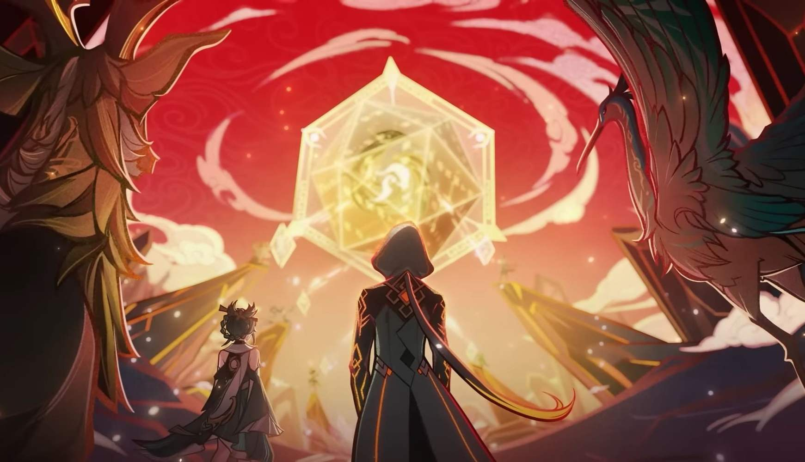
You can’t really see Xiao but he is to the right of Zhongli’s head, on the cliff
If Xiao is present during Guizhong’s death, it causes some problems with the timeline as Xiao should be over 2000 years old as stated in the game and interview. However, it does state “over 2000 years old” so any age above 2000 is a potential number for Xiao’s age.
Misconception
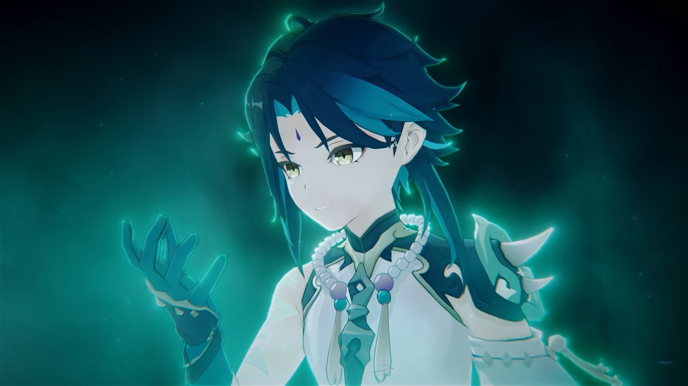
The Lantern Rite? The time for humans to discard their glowing trash into the sea has returned… How childish… Though if you insist… I will go with you.
The most common misconception of Xiao is that he is titled “Short and Emo” and that he is bland.
Xiao is short because it is his own choice as stated in the latest lantern rite quest, adepti can take any form of their choice. Xiao is not emo due to his personality, Xiao is a character with a unique backstory and a complex personality. He was enslaved by an evil God who forced him to do violent acts, which lead to Xiao not valuing life, to becoming a Yaksha tasked with protecting the life of the common folks in Liyue from evil spirits and other threats. His role as a protector is of great importance to him, and he takes it very seriously to repay the debt of his past and to Morax. Although he can be intimidating and give the impression that he is cruel and merciless, his actions and words show that he is far from that. In fact, he will go out of his way to save the innocent, even to the extent of sacrificing his life.
In the story, Xiao shows his compassionate side when he uses the last of his energy to transport the traveler and the others to the surface, leaving himself behind. He risks his own life to save them, showing that he is not a heartless character but one with a strong moral code.
Additionally, Xiao’s relationships with others also reveal his compassionate nature. He cares deeply for his close ones, such as the traveler and Ganyu, and will do everything in his power to help them when they are in need. He is also willing to put his own issues aside to help others, showing that he values the well-being of his friends and the people of Liyue above his own.
It’s too late. The connection between us is too strong. Even if you wanted to, it’s too late to sever it. Hm? You’ve never thought to sever it? *sigh* This eternal dance of demon subjugation… My fight goes on. But I would like to know more about you.
Conclusion
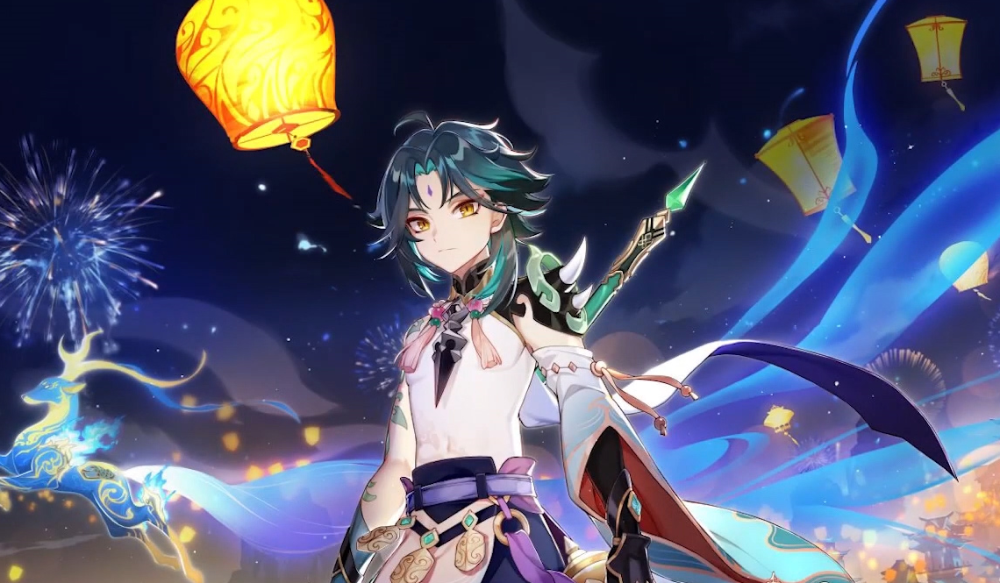
The limit to one’s power is self-destruction. Answer me. Why do you persist?
As remnants continue to haunt the land of Liyue, Xiao is the last of the Yaksha that is still able to uphold the contract of Morax of ending, or rather, enduring these threats.
When putting on the Yaksha’s Mask, it brings enormous power, but also great suffering. For Xiao to deal with all of this, while giving protection to the people, shows his loyalty and self-sacrifice for a time of peace that he wished for, even if it meant suffering as well. To avoid hurting others, he does his tasks swiftly and efficiently.
Though the cost of his duties is perpetual solitude, Xiao doesn’t mind, as he already sees no worth in his life. Whilst he previously lacked self-worth and a true will to live a happy life, he has, since meeting the traveler, started to find reasons to live and improve his sense of self-worth.
Should Xiao find the hidden value of his own life, he will finally be free of the shackles of self-doubt and self-deprecation. Maybe this will finally be a ray of light in his dark world.
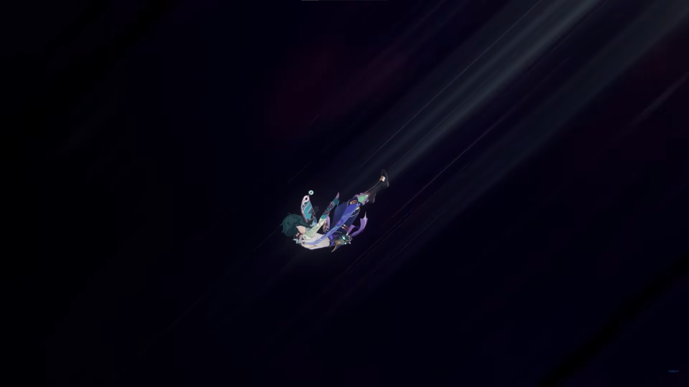
After millennia of suffering, and endless slaughter, I now see things for what they really are.